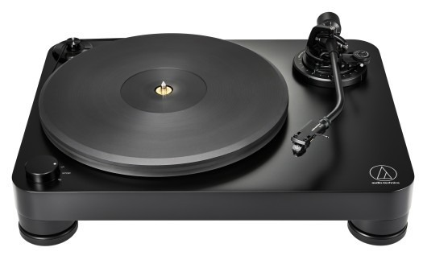

바늘/카트리지 교체
HOT-SWAP
전설적인 아날로그의 따뜻한 질감과 풍부한 중저음, 테크닉스 정품 블랙 쉘 장착
3D 컴포넌트 계층 레이어
TREE VIEW
플래터 & 바이닐 회전계
3 서브
데크 컨트롤 & 조명 시스템
2 서브
톤암 기구 어셈블리
2 스타일 & 부품
어셈블리 파츠 표시/숨김
PARTS
톤암 기구 스타일 선택
HOT-SWAP
✨
크롬 S (Chrome S)
클래식
미러 크롬 파이프 & 아치 짐벌

모던 오디오필 S-암
최신 실물
우측 휨 ➔ 하강 ➔ 좌측 휨 딥 블랙 파이프 & 원형 짐벌
바늘 & 카트리지 (Stylus)
6종 교체
클릭하여 3D 바늘 실시간 교체
HOT-SWAP
Shure M75ED Type 2
사진
1.25g · Technics Black 쉘
Ortofon 2M Red
1.8g · MM 타원 다이아몬드
Ortofon 2M Blue
1.8g · 누드 타원 다이아몬드
Ortofon Concorde
3.0g · 바나나 일체형 쉘
Shure M44-7
2.5g · 스크래치 레전드 팁
Audio-Technica VM95E
2.0g · 듀얼 무빙 마그넷
체크박스로 부품별 분해·조립 가시성 제어
3D 버튼 / 헤드셀 클릭 조작
|
스페이스바: 회전/정지
|
좌클릭 드래그: 360° 회전
실물 카트리지 & 헤드셀 레퍼런스 원본
ORIGINAL PHOTO
Technics Matte Black + Shure M75ED Type 2
사용자 제공 실물 사진 1:1 3D 정밀 구현 완료
• 헤드셀: Technics 정품 다이캐스트 매트 블랙 쉘, 전면 화이트 Technics 로고, 3개 벤트 홀 및 적·녹·청·백 4색 리드선 노출
• 카트리지: Shure M75ED Type 2 아날로그 명기, 아이보리 전면 라벨, 권장 침압 1.25g (0.75~1.5g 정밀 연동)
실물 톤암 어셈블리 레퍼런스 원본
ORIGINAL PHOTO
Audio-Technica AT-LPW / Denon DP-400 Hi-Fi Tonearm
사용자 제공 최신 실물 레퍼런스 1:1 3D 정밀 구현 완료
• 실물 S-Curve 톤암 파이프: 무게추 기준 우측으로 휜(+16.5mm) 다음 시원하게 내려와서 좌측으로 휘는(-23.7° 오프셋) 실물 곡선 지오메트리 & 사틴 딥블랙 PBR 머티리얼 1:1 완벽 구현
• 헤드셀 칼라 링: 매트블랙 원통에 정밀 가공된 실버 크롬 널링 스트라이프 투톤 링 재현
• 모던 원형 짐벌 요크: 슬릭한 원형 버티컬 짐벌 링과 좌우 크롬 베어링 볼트 디테일 탑재